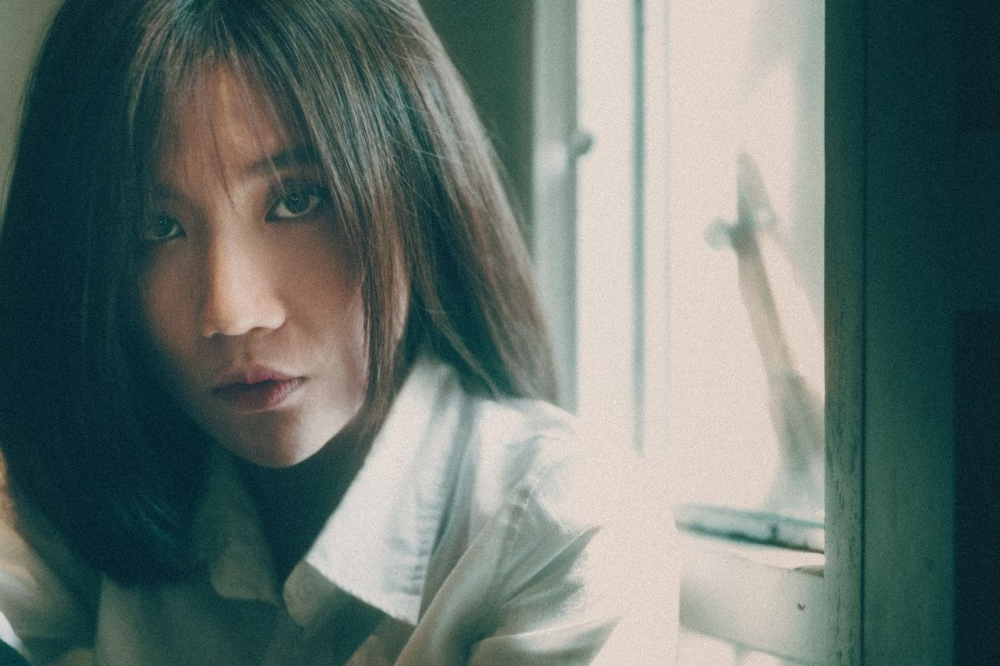
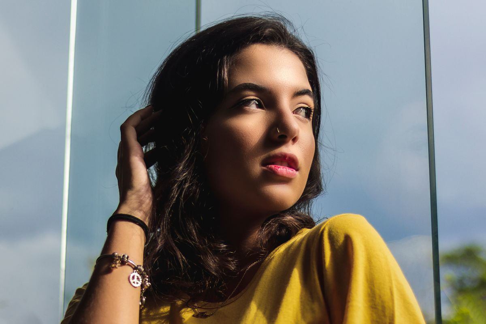

Избранное / 01
Истории в кадре.
Галерея показывает направление визуального языка. Фотографии служат примером визуального направления и принадлежат указанным авторам, а не фотографу этого концепта.

01 / Портрет02 / Свет

03 / ФормаКак устроена съёмка / 02Спокойно.
Спокойно.
По-настоящему.
На сайте фотографа человеку важно увидеть работы и понять, что будет происходить. Здесь этот путь собран из коротких ответов и прямой связи.
01Знакомство и запрос
02Идея и место съёмки
03Подбор готовых кадров
Выберите, с чего начать.
Выберите формат, чтобы подготовить тему сообщения.
Обсудить съёмку ↗Напишите о своей идее / 03
Начнём с разговора.
Это демонстрационный сайт. Форма показывает сценарий обращения, но никуда не отправляет данные.